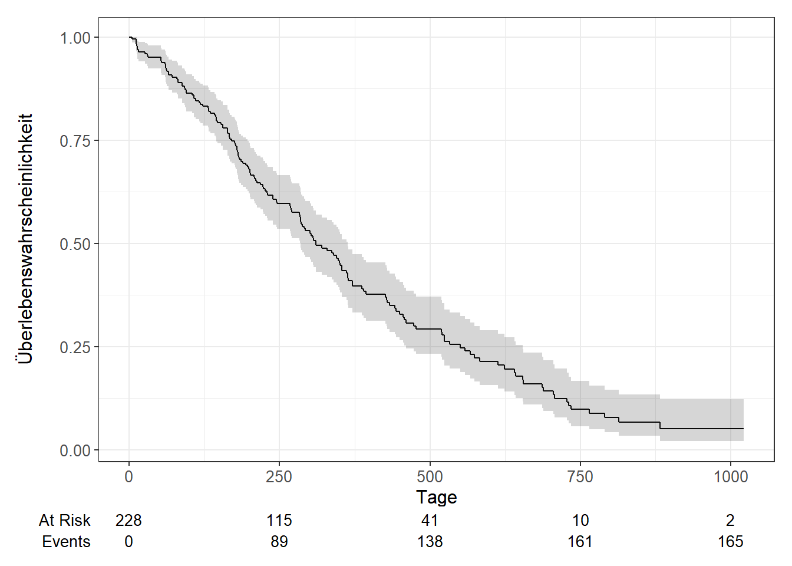
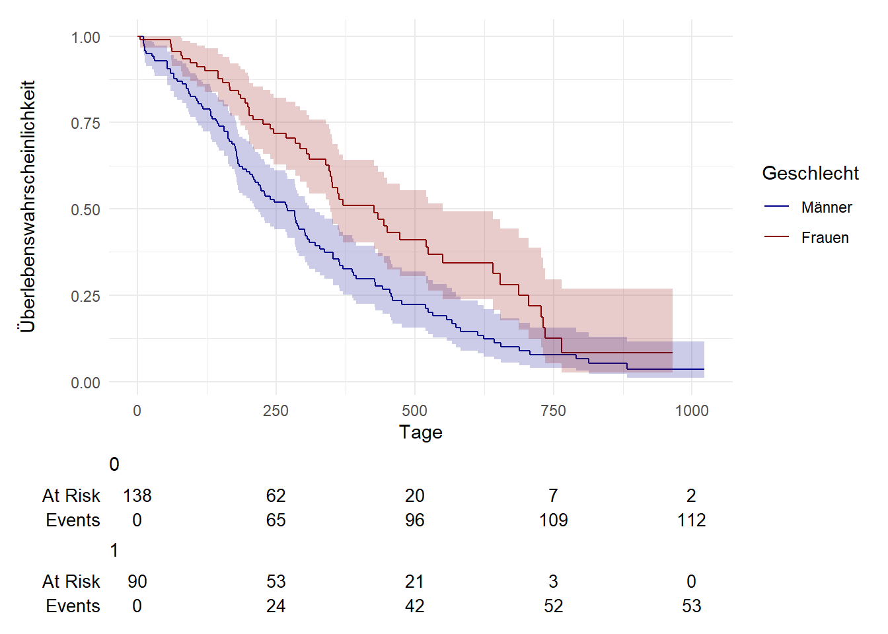

3. Übungsblatt (Ereignisdatenanalyse)
1 Organisation
1.1 Arbeitsverzeichnis festsetzen
1.2 Packages installieren und laden
Code
# Packages
pkgs <- c(
"tidyverse",
"sjPlot", # nice html tables
"survival", # survival analysis
"ggsurvfit" # flexible time-to-event figures
)
## Install uninstalled packages
lapply(pkgs[!(pkgs %in% installed.packages())], install.packages)
## Load all packages to library
lapply(pkgs, library, character.only = TRUE)1.3 Daten einlesen
Wir arbeiten mit einem Datensatz, der Teil des R-Pakets {survival} ist. Bitte lasse Dir alle Datensätze des Pakets anzeigen und speichere den Datensatz lung als df.
Datensätze, die im Package survival enthalten sind, anzeigen:
lung Datensatz als df speichern:
Schaue Dir nun die Beschreibung des Datensatzes an:
Der Datensatz enthält also Informationen zu PatientInnen der North Central Cancer Treatment Group.
2 Datenaufbereitung
In dieser Übung möchten wir untersuchen, ob es Unterschiede zwischen Männern und Frauen in der Überlebenszeit bei Lungenkrebs gibt.
Wir brauchen für unsere Analyse daher die folgenden 3 Variablen:
- dead (0: lebend, 1: tot)
- female (0: männlich, 1: weiblich)
- time (Tage)
Bitte suche diese heraus oder erstelle sie.
3 Datenexploration
3.1 Anzahl Beobachtungen
Wie viele Personen sind in dem Datensatz?
3.2 Anzahl Frauen und Männer
Wie viele Frauen und Männer sind jewils in dem Datensatz?
3.3 Anzahl Personden, die im Beobachtungszeitraum gestorben sind
Wie viele Personen sind im Beobachtungszeitraum gestorben?
3.4 Kreuztabelle Geschlecht und Überleben
Wie viel Prozent der Frauen und wie viel Prozent der Männer sind im Beobachtungszeitraum gestorben?
4 Ereignisdatenanalyse
4.1 Zensierung
Wie viele rechtszensierte und wie viele linkszentrierte Beobachtungen liegen vor?
4.2 Erste 10 Fälle
Schauen wir uns die ersten 10 Fälle des Datensatzes an. Was bedeutet das + hinter einer Zahl?
Das + bedeutet, dass es sich um rechtszensierte Fälle handelt. Diese Personen leben zum Ende des Beobachtungszeintraums noch.
Was ist wohl der Nullpunkt der Zeitvariable time?
4.3 Kaplan-Meier-Kurve
Erstelle eine Kaplan-Meier-Kurve.
4.4 Kaplan-Meier-Kurve mit KI
Nun ergänze die Kurve mit einem Konfidenzintervall.
4.5 Kaplan-Meier-Kurve mit Ki und Risikotabelle
Und nun füge bitte noch eine Risikotabelle hinzu.
Code

Wie viele Personen leben nach 500 Tagen noch?
4.6 Schätzung der Überlebensrate nach einem Jahr
Call: survfit(formula = Surv(time, dead) ~ 1, data = df)
time n.risk n.event survival std.err lower 95% CI upper 95% CI
365 65 121 0.409 0.0358 0.345 0.486Wir stellen fest, dass die 1-Jahres-Überlebenswahrscheinlichkeit in dieser Studie 41% beträgt.
5 Überlebenszeit im Median
Wie viele Tage übleben die PatientInnen im Median?
6 Kaplan-Meier-Kurve nach Geschlecht
Nun möchten wir die Geschlechterunterschiede in der Überlebenswahrscheinlichkeit über die Zeit graphisch untersuchen.
Code
survfit2(Surv(time, dead) ~ female, data = df) %>%
ggsurvfit() +
labs(
x = "Tage",
y = "Überlebenswahrscheinlichkeit",
color = "Geschlecht"
)+
add_confidence_interval() +
add_risktable() +
scale_color_manual(values = c('darkblue', 'darkred'), labels = c("Männer", "Frauen") ) +
scale_fill_manual(values = c('darkblue', 'darkred'), labels = c("Männer", "Frauen") ) +
theme_minimal() + guides(fill = "none")
7 Cox Proportional Hazards Model
Nun schätzen wir ein Cox Proportional Hazards Model. Gibt es signifikante Geschlechterunterschiede? Ist die Proportionalitätsannahme erfüllt?
Call:
coxph(formula = Surv(time, dead) ~ female, data = df)
n= 228, number of events= 165
coef exp(coef) se(coef) z Pr(>|z|)
female -0.5310 0.5880 0.1672 -3.176 0.00149 **
---
Signif. codes: 0 '***' 0.001 '**' 0.01 '*' 0.05 '.' 0.1 ' ' 1
exp(coef) exp(-coef) lower .95 upper .95
female 0.588 1.701 0.4237 0.816
Concordance= 0.579 (se = 0.021 )
Likelihood ratio test= 10.63 on 1 df, p=0.001
Wald test = 10.09 on 1 df, p=0.001
Score (logrank) test = 10.33 on 1 df, p=0.001 chisq df p
female 2.86 1 0.091
GLOBAL 2.86 1 0.091Erstelle eine Tabelle zur besseren Übersicht
Code
| Surv(time, dead) | |
| HR | |
| female | 0.59 ** |
| Observations | 228 |
| R2 Nagelkerke | 0.046 |
| * p<0.05 ** p<0.01 *** p<0.001 | |
7.1 Interpretiere den Koeffizienten von female:
Bei einem Cox-Regressionsmodell interessieren wir uns meist für die Hazard Ratio (HR). Die HR stellt das Verhältnis der Risiken zwischen zwei Gruppen zu einem bestimmten Zeitpunkt dar. Die HR wird als die momentane Rate des Auftretens des interessierenden Ereignisses bei denjenigen interpretiert, die noch ein Risiko für dieses Ereignis haben. Die HR ist exp(β).
- HR < 1: verringertes Sterberisiko
- HR > 1: erhöhtes Sterberisiko
HR = 0,59: Zu einem bestimmten Zeitpunkt sterben 0,59 mal so viele Frauen wie Männer. Frauen haben in dieser Stichprobe ein deutlich geringeres Sterberisiko als Männer.
8 Render
Wandle dieses Dokument in ein PDF und ein HTML Dokument um.
9 Weiterführende Literatur
3. Übungsblatt (Ereignisdatenanalyse) – Fortgeschrittene quantitative Methoden 3. Übungsblatt (Ereignisdatenanalyse) – Fortgeschrittene quantitative Methoden 3. Übungsblatt (Ereignisdatenanalyse) – Fortgeschrittene quantitative Methoden Fortgeschrittene quantitative Methoden